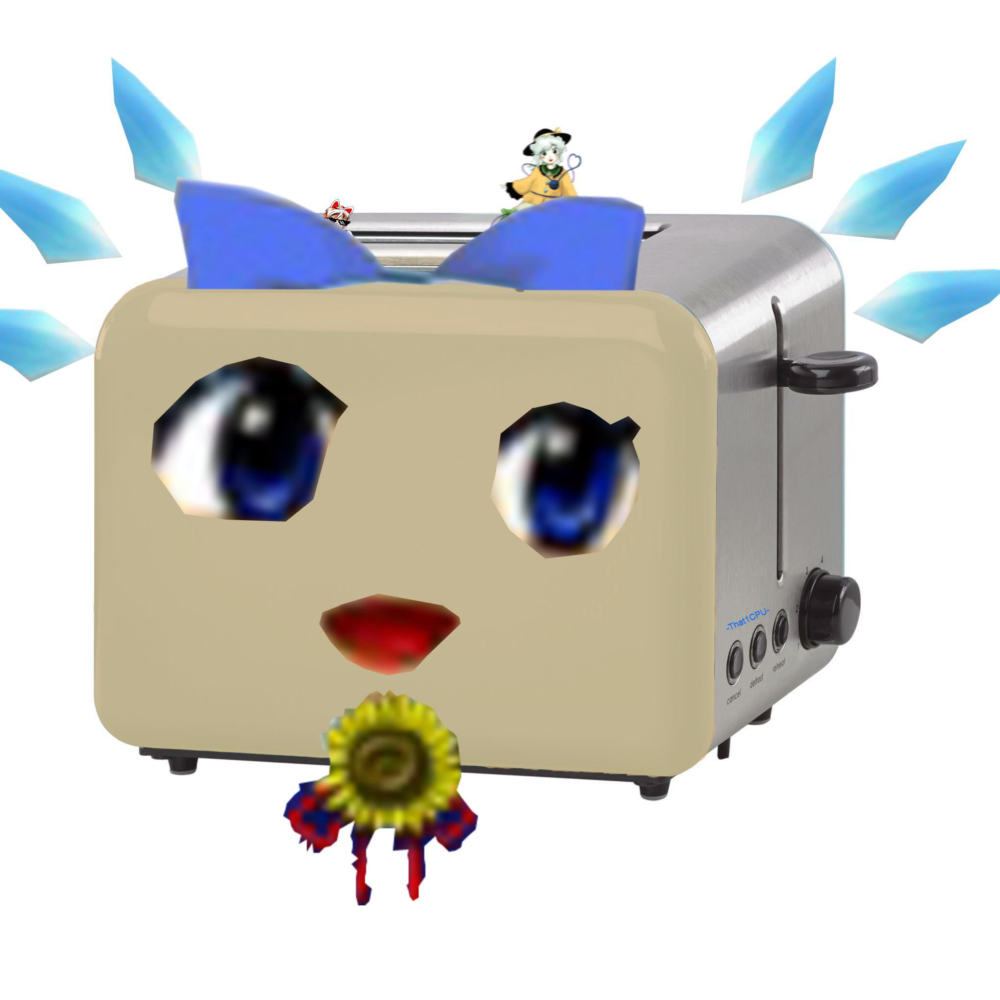
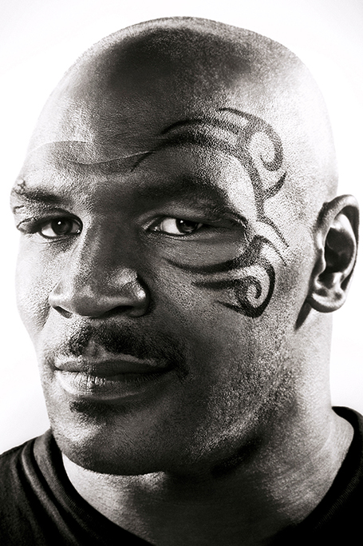

Home
Features
Options
Prices
episilon 3
Home
|
Features
|
Options
|
Prices
|
buy your new touhou toaster today!!! (limited time only!!!)
1 / 3

cirno toaster
2 / 3
reimu toaster
3 / 3
sakuyta toaster
testimonies
"ごみ (translated: best toaster ever!)"
-ZUN (creator of Touhou)

"these toasters are out of this world!"
-Mike Tyson